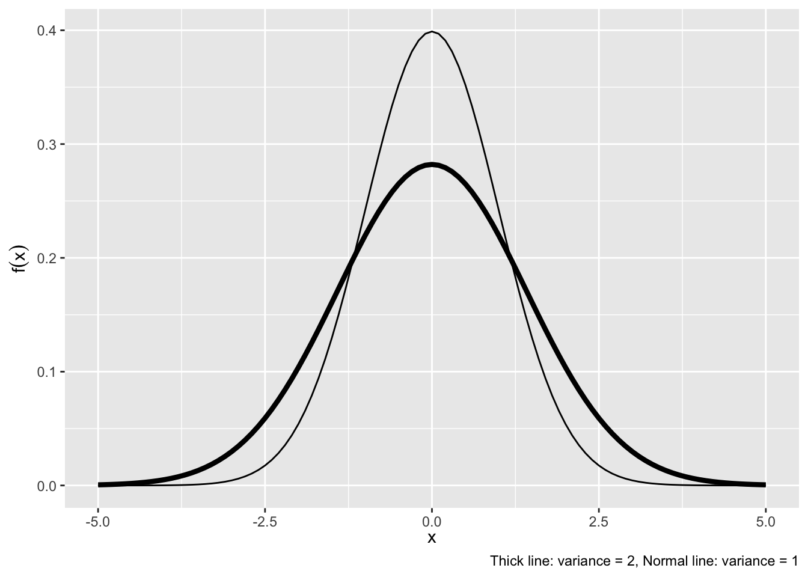

13 Summarizing Distributions
13.1 Expectation
We often want to summarize some characteristics of the distribution of a random variable. The most important summary is the expectation (or expected value, or mean), in which the possible values of a random variable are weighted by their probabilities.
Definition 13.1 (Expectation of a Discrete Random Variable) The expected value of a discrete random variable Y is
E(Y)=\sum\limits_{y} y P(Y=y)= \sum\limits_{y} y p(y)
In words, it is the weighted average of all possible values of Y, weighted by the probability that y occurs. It is not necessarily the number we would expect Y to take on, but the average value of Y after a large number of repetitions of an experiment.
Example 13.1
What is the expectation of a fair, six-sided die?
Expectation of a Continuous Random Variable: The expected value of a continuous random variable is similar in concept to that of the discrete random variable, except that instead of summing using probabilities as weights, we integrate using the density to weight. Hence, the expected value of the continuous variable Y is defined by
E(Y)=\int\limits_{y} y f(y) dy
Example 13.2 (Expectation of a Continuous Random Variable)
Find E(Y) for f(y)=\frac{1}{1.5}, \quad 0<y<1.5.
Expected Value of a Function
Remember: An Expected Value is a type of weighted average. We can extend this to composite functions. For random variable Y,
If Y is Discrete with PMF p(y),
E[g(Y)]=\sum\limits_y g(y)p(y)
If Y is Continuous with PDF f(y),
E[g(Y)]=\int\limits_{-\infty}^\infty g(y)f(y)dy
Properties of Expected Values
Dealing with Expectations is easier when the thing inside is a sum. The intuition behind this that Expectation is an integral, which is a type of sum.
- Expectation of a constant is a constant E(c)=c
- Constants come out E(c g(Y))= c E(g(Y))
- Expectation is Linear E(g(Y_1) + \cdots + g(Y_n))=E(g(Y_1)) +\cdots+E(g(Y_n)), regardless of independence
- Expected Value of Expected Values: E(E(Y)) = E(Y) (because the expected value of a random variable is a constant)
Finally, if X and Y are independent, even products are easy:
X \;\; \mathrm{ and } \;\; Y \mathrm{are independent } \;\Rightarrow\; E(XY) = E(X)E(Y)
Conditional Expectation: With joint distributions, we are often interested in the expected value of a variable Y if we could hold the other variable X fixed. This is the conditional expectation of Y given X = x:
- Y discrete: E(Y|X = x) = \sum_y yp_{Y|X}(y|x)
- Y continuous: E(Y|X = x) = \int_y yf_{Y|X}(y|x)dy
The conditional expectation is often used for prediction when one knows the value of X but not Y
13.2 Variance and Covariance
We can also look at other summaries of the distribution, which build on the idea of taking expectations. Variance tells us about the “spread” of the distribution; it is the expected value of the squared deviations from the mean of the distribution. The standard deviation is simply the square root of the variance.
Definition 13.2 (Variance) The Variance of a Random Variable Y is
\text{Var}(Y) = E[(Y - E(Y))^2] = E(Y^2)-[E(Y)]^2
The Standard Deviation is the square root of the variance :
SD(Y) = \sigma_Y= \sqrt{\text{Var}(Y)}
Example 13.3 Given the following PMF:
f(x) = \begin{cases} \frac{3!}{x!(3-x)!}(\frac{1}{2})^3 \quad x = 0,1,2,3\\ 0 \quad otherwise \end{cases}
What is \text{Var}(x)?
Hint: First calculate E(X) and E(X^2)
Definition 13.3 (Covariance) The covariance measures the degree to which two random variables vary together; if the covariance between X and Y is positive, X tends to be larger than its mean when Y is larger than its mean.
\text{Cov}(X,Y) = E[(X - E(X))(Y - E(Y))]
We can also write this as
\begin{align*} \text{Cov}(X,Y) &= E\left(XY - XE(Y) - E(X)Y + E(X)E(Y)\right)\\ &= E(XY) - E(X)E(Y) - E(X)E(Y) + E(X)E(Y)\\ &= E(XY) - E(X)E(Y) \end{align*}
The covariance of a variable with itself is the variance of that variable.
The Covariance is unfortunately hard to interpret in magnitude. The correlation is a standardized version of the covariance, and always ranges from -1 to 1.
Definition 13.4 (Correlation) The correlation coefficient is the covariance divided by the standard deviations of X and Y. It is a unitless measure and always takes on values in the interval [-1,1].
\text{Corr}(X, Y) = \frac{\text{Cov}(X,Y)}{\sqrt{\text{Var}(X)\text{Var}(Y)}} = \frac{\text{Cov}(X,Y)}{SD(X)SD(Y)}
Properties of Variance and Covariance:
- \text{Var}(c) = 0
- \text{Var}(cY) = c^2 \text{Var}(Y)
- \text{Cov}(Y,Y) = \text{Var}(Y)
- \text{Cov}(X,Y) = \text{Cov}(Y,X)
- \text{Cov}(aX,bY) = ab \text{Cov}(X,Y)
- \text{Cov}(X+a,Y) = \text{Cov}(X,Y)
- \text{Cov}(X+Z,Y+W) = \text{Cov}(X,Y) + \text{Cov}(X,W) + \text{Cov}(Z,Y) + \text{Cov}(Z,W)
- \text{Var}(X+Y) = \text{Var}(X) + \text{Var}(Y) + 2\text{Cov}(X,Y)
Exercise 13.1 (Expectation and Variance) Suppose we have a PMF with the following characteristics: \begin{align*} P(X = -2) &= \frac{1}{5}\\ P(X = -1) &= \frac{1}{6}\\ P(X = 0) &= \frac{1}{5}\\ P(X = 1) &= \frac{1}{15}\\ P(X = 2) &= \frac{11}{30} \end{align*}
- Calculate the expected value of X
Define the random variable Y = X^2.
Calculate the expected value of Y. (Hint: It would help to derive the PMF of Y first in order to calculate the expected value of Y in a straightforward way)
Calculate the variance of X.
Exercise 13.2 Given the following PDF:
f(x) = \begin{cases} \frac{3}{10}(3x - x^2) \quad 0 \leq x \leq 2\\ 0 \quad \mathrm{ otherwise} \end{cases}
Find the expectation and variance of X.
Exercise 13.3 Find the mean and standard deviation of random variable X. The PDF of this X is as follows:
f(x) = \begin{cases} \frac{1}{4}x \quad 0 \leq x \leq 2\\ \frac{1}{4}(4 - x) \quad 2 \leq x \leq 4\\ 0 \quad \mathrm{ otherwise} \end{cases}
Next, calculate P(X < \mu - \sigma) Remember, \mu is the mean and \sigma is the standard deviation.
13.3 Common Distributions
Two discrete distributions used often are:
Definition 13.5 (Binomial Distribution)
Y is distributed binomial if it represents the number of “successes” observed in n independent, identical “trials,” where the probability of success in any trial is p and the probability of failure is q=1-p.
For any particular sequence of y successes and n-y failures, the probability of obtaining that sequence is p^y q^{n-y} (by the multiplicative law and independence). However, there are \binom{n}{y}=\frac{n!}{(n-y)!y!} ways of obtaining a sequence with y successes and n-y failures. So the binomial distribution is given by p(y)=\binom{n}{y}p^y q^{n-y}, \quad y=0,1,2,\ldots,n with mean \mu=E(Y)=np and variance \sigma^2=\text{Var}(Y)=npq.
Example 13.4
Republicans vote for Democrat-sponsored bills 2% of the time. What is the probability that out of 10 Republicans questioned, half voted for a particular Democrat-sponsored bill? What is the mean number of Republicans voting for Democrat-sponsored bills? The variance? 1. P(Y=5)= 2. E(Y)= 3. \text{Var}(Y)=6
Definition 13.6 (Poisson Distribution) A random variable Y has a Poisson distribution if
P(Y = y)=\frac{\lambda^y}{y!}e^{-\lambda}, \quad y=0,1,2,\ldots, \quad \lambda>0
The Poisson has the unusual feature that its expectation equals its variance: E(Y)=\text{Var}(Y)=\lambda. The Poisson distribution is often used to model rare event counts: counts of the number of events that occur during some unit of time. \lambda is often called the “arrival rate.”
Example 13.5
Border disputes occur between two countries through a Poisson Distribution, at a rate of 2 per month. What is the probability of 0, 2, and less than 5 disputes occurring in a month?
Two continuous distributions used often are:
Definition 13.7 (Uniform Distribution)
A random variable Y has a continuous uniform distribution on the interval (\alpha,\beta) if its density is given by f(y)=\frac{1}{\beta-\alpha}, \quad \alpha\le y\le \beta The mean and variance of Y are E(Y)=\frac{\alpha+\beta}{2} and \text{Var}(Y)=\frac{(\beta-\alpha)^2}{12}.
Example 13.6 For Y uniformly distributed over (1,3), what are the following probabilities?
- P(Y=2)
- Its density evaluated at 2, or f(2)
- P(Y \le 2)
- P(Y > 2)
Definition 13.8 (Normal Distribution) A random variable Y is normally distributed with mean E(Y)=\mu and variance \text{Var}(Y)=\sigma^2 if its density is
f(y)=\frac{1}{\sqrt{2\pi}\sigma}e^{-\frac{(y-\mu)^2}{2\sigma^2}}
See Figure Figure 13.1 are various Normal Distributions with the same \mu = 1 and two versions of the variance.
13.4 Joint Distributions
Often, we are interested in two or more random variables defined on the same sample space. The distribution of these variables is called a joint distribution. Joint distributions can be made up of any combination of discrete and continuous random variables.
Joint Probability Distribution: If both X and Y are random variable, their joint probability mass/density function assigns probabilities to each pair of outcomes
Discrete:
p(x, y) = P(X = x, Y = y)
such that p(x,y) \in [0,1] and \sum\sum p(x,y) = 1
Continuous:
f(x,y);P((X,Y) \in A) = \int\!\!\!\int_A f(x,y)dx dy
s.t. f(x,y)\ge 0 and
\int_{-\infty}^\infty\int_{-\infty}^\infty f(x,y)dxdy = 1
If X and Y are independent, then P(X=x,Y=y) = P(X=x)P(Y=y) and f(x,y) = f(x)f(y)
Marginal Probability Distribution: probability distribution of only one of the two variables (ignoring information about the other variable), we can obtain the marginal distribution by summing/integrating across the variable that we don’t care about:
- Discrete: p_X(x) = \sum_i p(x, y_i)
- Continuous: f_X(x) = \int_{-\infty}^\infty f(x,y)dy
Conditional Probability Distribution: probability distribution for one variable, holding the other variable fixed. Recalling from the previous lecture that P(A|B)=\frac{P(A\cap B)}{P(B)}, we can write the conditional distribution as
- Discrete: p_{Y|X}(y|x) = \frac{p(x,y)}{p_X(x)}, \quad p_X(x) > 0
- Continuous: f_{Y|X}(y|x) = \frac{f(x,y)}{f_X(x)},\quad f_X(x) > 0
Exercise 13.4 Suppose we are interested in the outcomes of flipping a coin and rolling a 6-sided die at the same time. The sample space for this process contains 12 elements: \{(H, 1), (H, 2), (H, 3), (H, 4), (H, 5), (H, 6), (T, 1), (T, 2), (T, 3), (T, 4), (T, 5), (T, 6)\} We can define two random variables X and Y such that X = 1 if heads and X = 0 if tails, while Y equals the number on the die.
We can then make statements about the joint distribution of X and Y. What are the following?
- P(X=x)
- P(Y=y)
- P(X=x, Y=y)
- P(X=x|Y=y)
- Are X and Y independent?
Answers to Examples and Exercises
Answer to Example Example 13.1:
E(Y)=7/2
We would never expect the result of a rolled die to be 7/2, but that would be the average over a large number of rolls of the die.
Answer to Example 13.2
0.75
Answer to Example 13.3:
E(X) = 0 \times \frac{1}{8} + 1 \times \frac{3}{8} + 2 \times \frac{3}{8} + 3 \times \frac{1}{8} = \frac{3}{2}
Since there is a 1 to 1 mapping from X to X^2: E(X^2) = 0 \times \frac{1}{8} + 1 \times \frac{3}{8} + 4 \times \frac{3}{8} + 9 \times \frac{1}{8} = \frac{24}{8} = 3
\begin{align*} \text{Var}(x) &= E(X^2) - E(x)^2\\ &= 3 - (\frac{3}{2})^2\\ &= \frac{3}{4} \end{align*}
Answer to Exercise 13.1:
E(X) = -2(\frac{1}{5}) + -1(\frac{1}{6}) + 0(\frac{1}{5}) + 1(\frac{1}{15}) + 2(\frac{11}{30}) = \frac{7}{30}
E(Y) = 0(\frac{1}{5}) + 1(\frac{7}{30}) + 4(\frac{17}{30}) = \frac{5}{2}
\begin{align*} \text{Var}(X) &= E[X^2] - E[X]^2\\ &= E(Y) - E(X)^2\\ &= \frac{5}{2} - \frac{7}{30}^2 \approx 2.45 \end{align*}
Answer to Exercise 13.2:
- expectation = \frac{6}{5}, variance = \frac{6}{25}
Answer to Exercise 13.3:
mean = 2, standard deviation = \sqrt{\frac{2}{3}}
\frac{1}{8}(2 - \sqrt{\frac{2}{3}})^2